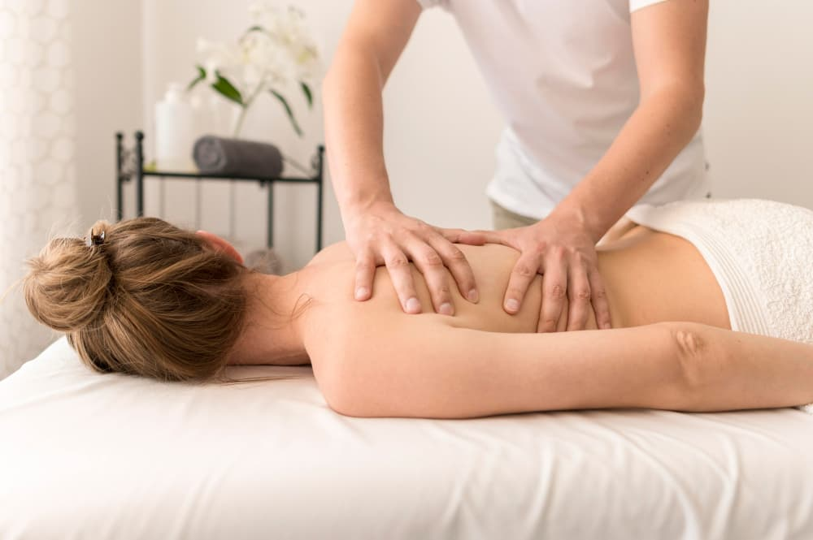
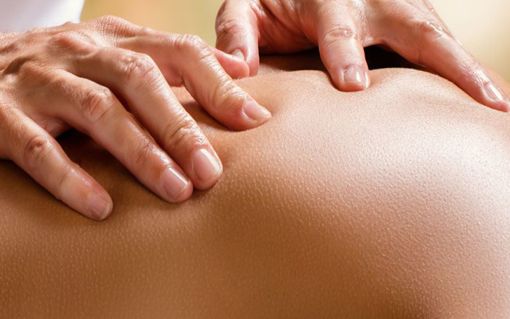
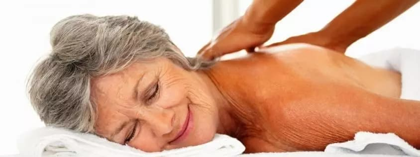

Відпочиньте від повсякденної метушні та отримайте незабутнє розслаблення в нашому кабінеті масажу.
Записуйтесь за телефоном 050 - 521 - 65 - 50. Ми чекаємо на Вас!


Плюси
Мінуси
Загалом, лікування м'язових дисфункцій за допомогою масажу може бути дуже ефективним і приємним процесом, який допомагає покращити рухливість тіла та поліпшити загальний стан здоров'я.
М'язові дисфункції можуть впливати на ваше здоров'я та знижувати якість життя. Однак, ви можете змінити це! Запишіться на м'язовий масаж та знайдіть полегшення від болів та напруги м'язів.
Ось декілька загальних технік, які можуть використовуватися для масажу м'язових дисфункцій:
Крім того, масаж може бути комбінованим з іншими методами лікування, такими як фізична терапія та розтяжка м'язів.
Остаточний вибір технік залежить від типу та важкості м'язової дисфункції, а також від індивідуальних потреб пацієнта.
Відчуваєте біль у м'язах та незручності під час руху? Не відкладайте відвідування масажиста на потім! Запишіться на м'язовий масаж прямо зараз та насолоджуйтеся життям без болів.
М'язові дисфункції - це різноманітні порушення функціонування м'язів, які можуть виникати з різних причин. Вони можуть проявлятись у вигляді болю, напруги, слабкості, деформації та інших симптомів.
Для лікування м'язових дисфункцій можна використовувати різні методи, включаючи масаж, фізіотерапію, лікувальну фізкультуру, йогу тощо.
Важливо вчасно записатися та дотримуватися рекомендацій щодо процесу лікування.
Пропонуємо широкий вибір масажних послуг для всіх вікових груп та проблем здоров'я. З радістю допоможу вам вибрати оптимальний варіант та забронювати зручний час відвідин.
Масажний кабінет займається професійним підходом до кожного клієнта. Використовую тільки найкращі масажні техніки та інструменти, щоб забезпечити максимальний ефект від процедур. Також стежимо за гігієною та безпекою в масажному кабінеті, щоб ви могли насолоджуватися масажем у комфортних умовах.
Масажні послуги доступні за розумними цінами, що дозволяє кожному клієнту відчути користь від процедури та отримати задоволення від відпочинку.Пропоную не лише класичний масаж, а й різноманітні техніки, такі як шведський масаж, тайський масаж та інші, які допоможуть вам відчути глибоку розслабленість і зняти напругу з м'язів.
Дбаємо про комфорт та безпеку наших клієнтів, тому використовуємо тільки найкращі масажні олії та креми, які не містять шкідливих речовин. Маю високу кваліфікацію та досвід роботи з клієнтами різного віку та з різними проблемами здоров'я. Ви можете бути впевнені, що ви отримаєте найкращий сервіс та насолоджуватиметесь кожною миттю масажу в масажному кабінеті.